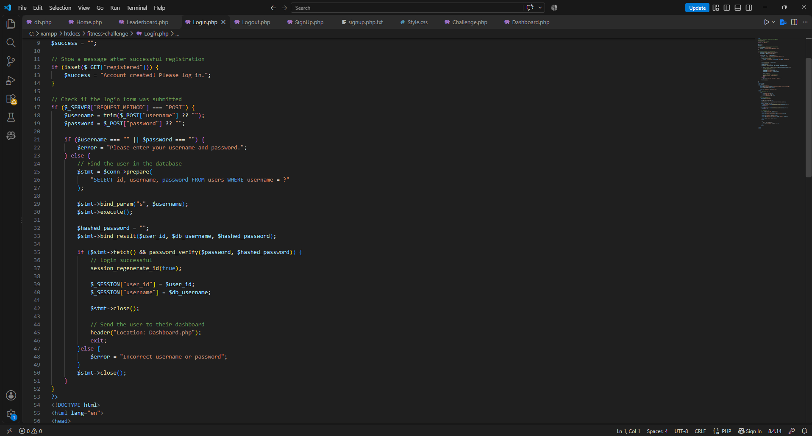
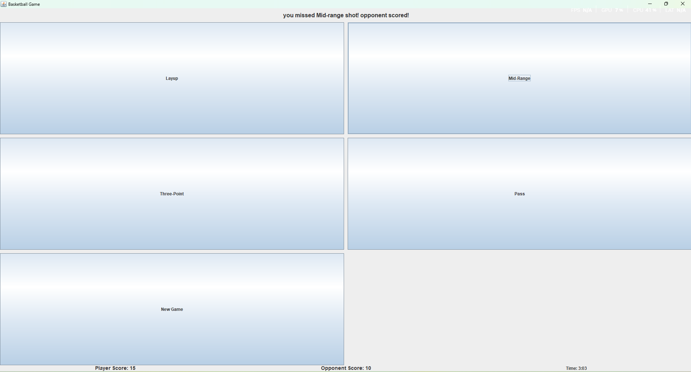
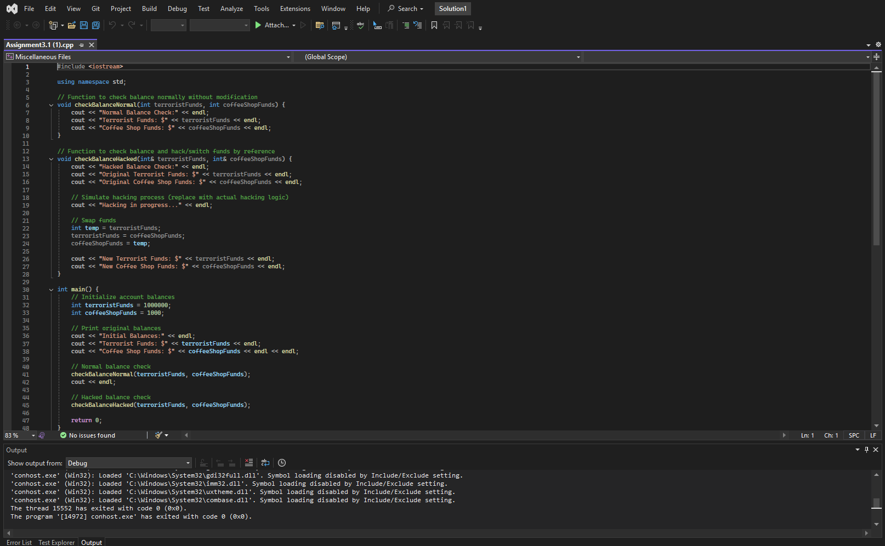
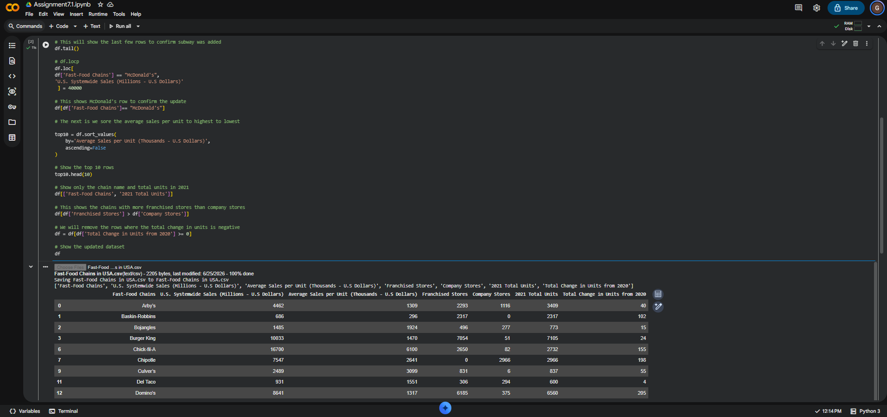
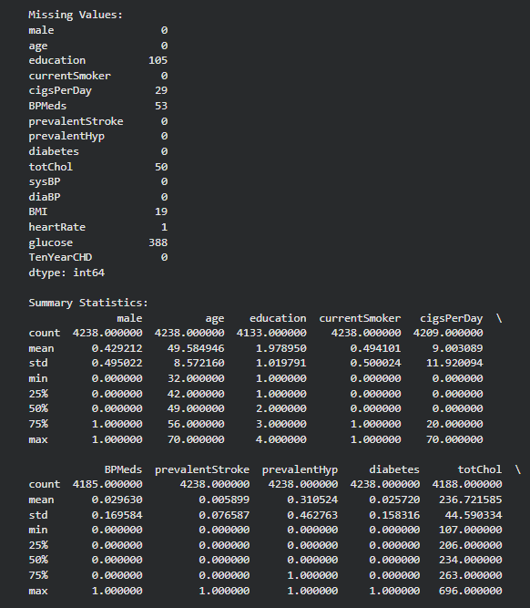
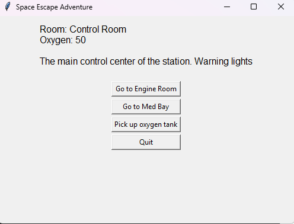
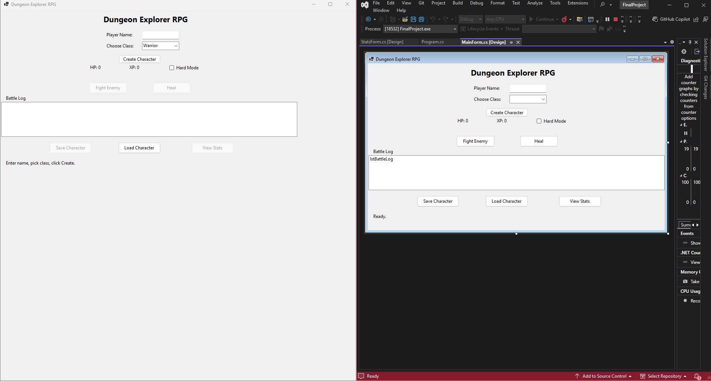

Computer Science - Objective 1
Document the software development process to analyze a problem and to design, build, and test software solutions.
Project 1: FitChallenge
FitChallenge demonstrates my ability to follow the software development process by identifying the need for a fitness competiton platform, planning the website structure, and developing its features. I designed the interface using HTML and CSS, implemented application functioality using PHP, and connected MySQL to manage user information and leaderboard data. I also tested the login, registration, and database functionality to identify and correct errors.

Project 2: Basketball Game Applications
This project demonstrates my ability to develop and test an interactive software application. I designed a basketball game interface that allows players to select different actions, including layups, mid-range shots, three-point shots, and passes. The application uses game logic to update scores and display results based on player actions. Testing the applications allowed me to observe how the interface responds to different selections and verify the scoring functionality.

Computer Science - Objective 2
Demonstrate software development skills using more than one programming language and development environment.
Project 1: C++ Account Balance Simulation
This project demonstrates my ability to develop software using C++. I created functions to compare passing variables by value and by reference. The program simulates account balances and demonstrates how passing variables by reference allows a function to modify their original values. I used variables, functions, and output statements to demonstrate my understanding of C++ programming. Together with my Python project in Google Colab, this demonstrates my experience with multiple programming languages and development environments.

Project 2: Basketball Database Application
This project demonstrates my ability to design and develop a software solution for organizing basketball information. I applied programming and database concepts to create an application that manages structured data. The project required planning how information would be organized and implementing database operations to support the application's functionality.

Computer Science - Objective 3
Implement data-driven solutions.
Project 1: Heart Disease Risk Prediction
For this project, I used Python and Pandas to analyze a heart disease dataset. I cleanded and prepared the data before training a logistic regression model to predict heart disease risk. I also tested the model and evaluated its accuracy. This project demonstrates how I can use data analysis and machine learning to develop a data-driven solution.

Project 2: Space Escape Adventure
For this project, I developed a Python adventure game using Tkinter. I used dictionaries to store information about different rooms, including descriptions, available exits, and items. The program tracks the player's current location, oxygen level, and inventory. As the player moves through the space station, the program updates these values and uses them to determine the available actions and game outcomes. This project demonstrates my ability to use structured data to control the behavior of a software application.

Computer Science - Objective 3
Design and implement software solutions for multiple platforms including mobile devices.
Project 1: Heart Disease Risk Prediction
For this project, I used Python and Pandas to analyze a heart disease dataset. I cleanded and prepared the data before training a logistic regression model to predict heart disease risk. I also tested the model and evaluated its accuracy. This project demonstrates how I can use data analysis and machine learning to develop a data-driven solution.
Project 2: Space Escape Adventure
For this project, I developed a Python adventure game using Tkinter. I used dictionaries to store information about different rooms, including descriptions, available exits, and items. The program tracks the player's current location, oxygen level, and inventory. As the player moves through the space station, the program updates these values and uses them to determine the available actions and game outcomes. This project demonstrates my ability to use structured data to control the behavior of a software application.
Computer Science - Objective 4
Design and implement software solutions for multiple platforms including mobile devices.
Project 1: JavaScript in Web Development
For this assignment, I researched how JavaScript can be used to develop web applications for multiple platforms. I examined frameworks such as React Native and Ionic, which allow developers to create applications for Android and iOS. This research helped me understand the advantages and challenges of cross-platform development.
Computer Science - Objective 5
Design, develop, and maintain object-oriented software solutions utilizing inheritance, encapsulation, polymorphism, and abstraction.
Project 1: Football Penalty Shootout
For this project, I developed a football penalty shootout game using C++. The game allows players to select shooting directions and compete against an AI-controlled goalkeeper across five rounds. I used object-oriented programming principles to organize the application. The Shooter and goalkeeper classes inherit from an abstract Player class. I used encapsulation to manage game data, polymorphism through overridden virtual methods, and abstraction through a pure virtual function. This project demonstrates my ability to design and implement object-oriented software using inheritance, encapsulation, polymorphism, and abstraction.

Project 2: C# RPG Character Battle Game
For this project, I developed an RPG character battle game using C# and Windows Forms in Visual Studio. The application allows players to create characters, participate in battles, manage health and experience points, and save or load their progress. This project demonstrates my understanding of object-oriented programming through classes, objects, methods, and encapsulation. It also helped me develop skills in creating interactive desktop applications.

Computer Science - Objective 6
Within software solutions, describe, implement, and analyze data structure techniques.
Project 1: Graph Data Structures and Algorithms
For this project, I developed a C++ application that demonstrates graph data structures and traversal algorithms. I used adjacency lists to represent connections between vertices. I implemented Depth-First Search (DFS) and Breadth-First Search (BFS) to explore the graph. DFS uses a recursion to explore paths, while Breadth-First uses a queue to visit vertices level by level. This project helped me understand how different data structures and algorithms organize and process information efficiently, I also examined the time complexity of graph traversal.

Project 2: Binary Search Tree - C++
For this project, I developed a Binary Search Tree (BST) application using C++. The program organizes the data into nodes and demonstrates how values can be inserted, search, and deleted from a tree. I implemented inorder, preorder, and postorder traversal techniques to examine how tree structures process data. I also tested the performance of the Binary Search Tree using different dataset sizes to analyze insertion and deletion efficiency. This project demonstrates my ability to implement and analyze data structures and algorithms.